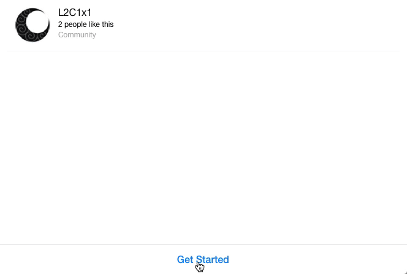

Art by Orphen-Sirius @DeviantArt
Happy Holidays!
Art by Orphen-Sirius @DeviantArt
20 months and 20 days has passed since we launched this project on April 4, 2016.
About 1000 game accounts and more then 1100 player characters were created during this period of time. 1 ‐ 2 accounts and player characters are created every day.
Total use time (time players actively spent in the game) has exceeded 8 years.
235 million of adena has been farmed, total market capitalization of in-game values has reached 980 million adena.
Our team has already invested $ 50 000 value worth of their time into the project and this value continues to grow every day.
A lot of work has been done. To name just few things,
A lot much more still will be done. One of our main challenges is opening of the game world #2, "Hell". We're actively looking for the human resources to achieve it.
We would like to thank everyone who spends time with us.
We'd like to give special thanks to the people who help us, to name some of them,
We'd like to mention everyone so if you're feeling like we've forgotten to mention you, just give us a note and we'll fix this!
Happy Christmas and New Year Holidays!
L2C1x1 Team
Published on: December 24, 2017
Meet Nyx, the Chatbot
Introducing Nyx, the Chatbot, version 0.1 (revision 20170402):
Be the first to say "hello" to the goddess of the night! Try it now!
Published on: April 6, 2017
Unbelievable But True
One year has passed since we went online. We've started to work on the project on April 2, 2016 and after only two days of work managed to open it to the public. This happened on April 4, 2016.
We dedicate the launch of our facebook chatbot - Nyx to this great event. We go global!
We're really excited you're a part of our community! As we expand, we need more and more people to join our core team (GMs, PRs, developers).
Published on: April 1, 2017
Problems Accessing The Game
Starting February 14, 2017 some players may not be able to login into the game, getting "Password does not match this account. Confirm your account information and log in again later." error message.
If you experience such a problem with your account(s), please write an email to l2c1x1fc@gmail.com with subject "login problem", specifying the full list of your accounts and inaccessible ones.
Thank you!
Published on: February 14, 2017
"The Great Dion Anomaly" Disappeared
An anomaly has suddenly disappeared after NPC server restart on February 1, 2017 2:15 PM
Published on: February 1, 2017
Event: Discover "The Great Dion Anomaly"
An anomaly of unknown nature and behavior was discovered recently in Dion area.
Be the first to study it!

A-a-a-a-a-a!!!1111
Published on: January 26, 2017
Services v1.0 Released
We are glad to announce that after 3 months of work the first version of "Services" (v1.0) is released!
"Services" is a RESTful API project aimed to provide a variety of services for PTS.
List of services included in v1.0:
List of features included in v1.0:
See also: API Documentation, RESTful API Tester, REST API concepts and examples (Video Tutorial)
Published on: July 18, 2016
HTTPS Enabled
Starting July 10, 2016, both our domains l2c1x1.com and l2c1x1.org support HTTPS protocol.
Please make sure to use it instead of insecure HTTP when dealing with sensitive data, like user credentials.
In particular make sure to access both /911 and /services locations over HTTPS.
Published on: July 10, 2016
GM Days in July 2016: July 4-7, 2016
L2C1x1 fan-club is always looking for ppl to contribute into the project, in particular GMs. Did you ever think about an opportunity of participating in the project as a GM?
Then check this out!
During four days in July (July 4-7) you will have an ability to take a closer look at GMs work. During the period specified all already exisiting characters will become GMs, giving everyone an ability to try on the job of GM.
Technical information: PTS database will be backed up on the Monday morning, July 4. All characters will be marked as GMs immediately after backup. The database will be restored to its original (July 4) state on the Friday morning, July 8.
Published on: June 29, 2016
Event: My Little Traveler (May 2016)
How often do you use gatekeepers in the L2C1x1 World? Do you visit your friends in starting locations other then yours a lot?
Not so often, right? ;) Then check this out!
The Gatekeeper's Guild together with local authorities of Aden, Giran, Oren, Dion and Gludio present an incredible opportunity for everyone to visit their friends and discover the World of L2C1x1: during half of a year in the World of Aden (meaning one month of real time) the gatekeepers teleportation prices reduced 100 times!
Do not miss this opportunity!
An event takes place starting May 1, 2016 till May 31, 2016. During an event period all teleportation prices are reduced 100 times.
Published on: April 25, 2016